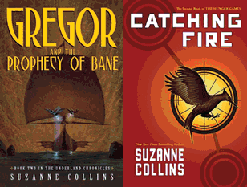

Suzanne Collins

Suzanne Collins was born on August 10, 1962 in HarfordConnecticut.Beinga daughterof a military family they moved around a lot, but eventually Collins graduated from Indiana University with a double major in theater and telecommunications. She was inspired by Alice in Wonderland to write her first series The Underland Chronicles. The next series she wrote was The Hunger Games, a three-part book series that was one the New York Times Bestseller for 286 consecutive weeks. The book was later turned into a movie, and they recently published the second movie last November. Currently, Suzanne Collins, is back in Connecticut with her family, and kittens.
This information was found from Suzanne Collins Books and Wikipedia


"To this day, I can never shake the connection between this boy, Peeta Mellark, and the bread that gave me hope and the dandelion that reminded me that I was not doomed." -Katniss Everdeen